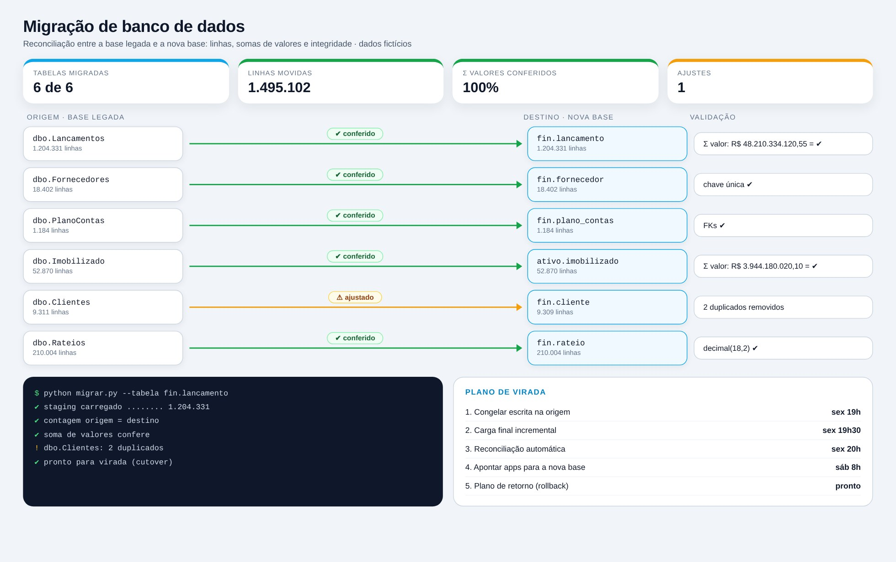

Lógica do negócio
Como funciona o processo
Migrar uma base não é só copiar tabelas: é provar que nada se perdeu. Isso exige mapear esquema e tipos, carregar por etapas, reconciliar contagens e somas de valores entre origem e destino e planejar a virada (cutover) com plano de retorno.
Regras que governam o processo
- Contagem de linhas igual entre origem e destino
- Soma de valores por período igual (valor monetário nunca em float)
- Chaves únicas e chaves estrangeiras preservadas
- Virada com janela definida e plano de retorno (rollback)
Como resolvi com dados
Inventário e mapeamento
Levanto tabelas, tipos e dependências e defino o de/para de esquema.
Carga em etapas
Staging, carga completa e depois incremental até a virada.
Reconciliação
Comparo contagens, somas e checksums tabela a tabela.
Tratamento
Corrijo duplicados e tipos antes de liberar.
Virada e retorno
Congelo a origem, carrego o final, valido e aponto os apps para a nova base.
Tecnologias utilizadas
Fontes de dados
Bancos e SQL
Processamento
Interface
Entrega
Automação
Funcionalidades
IA aplicada neste projeto
Geração de cenários de divergência (duplicados, tipos numéricos, datas) para testar a reconciliação.

Miguel Vinicius Moura Martins
Defini a regra de negócio, modelei os dados, validei os números contra o processo manual e desenvolvi a ferramenta com apoio de IA.